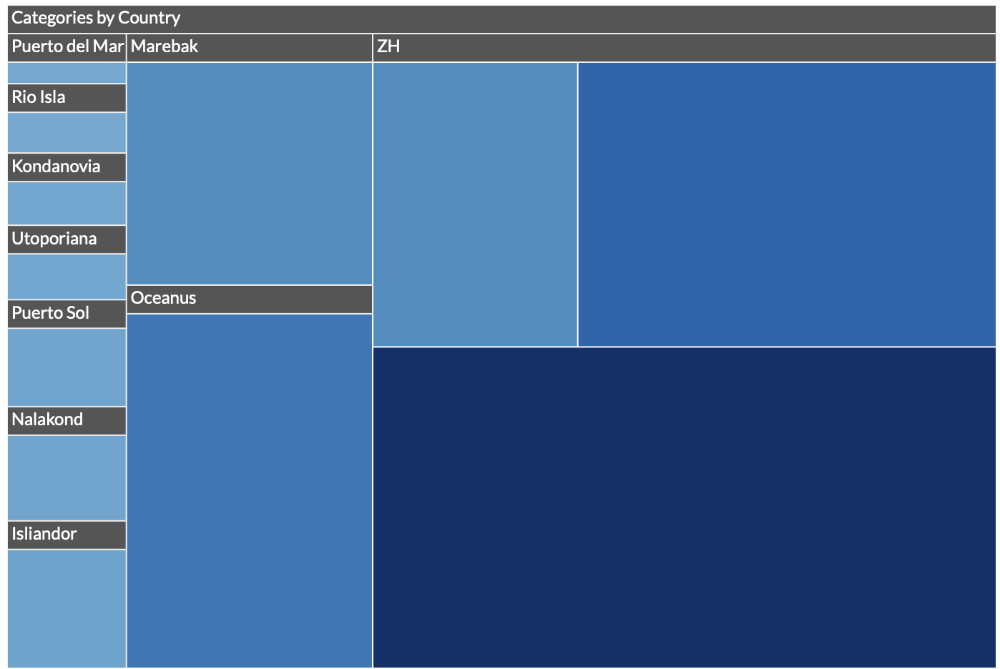
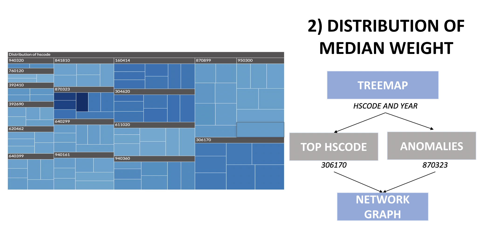
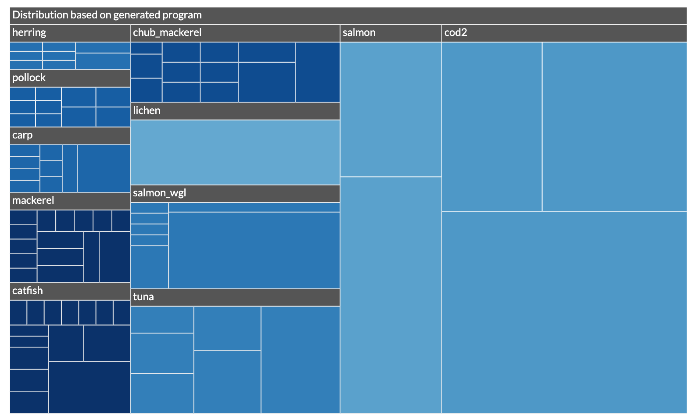
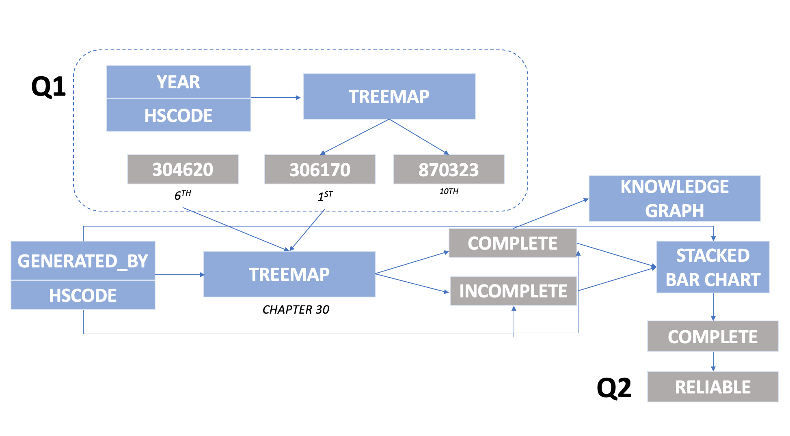
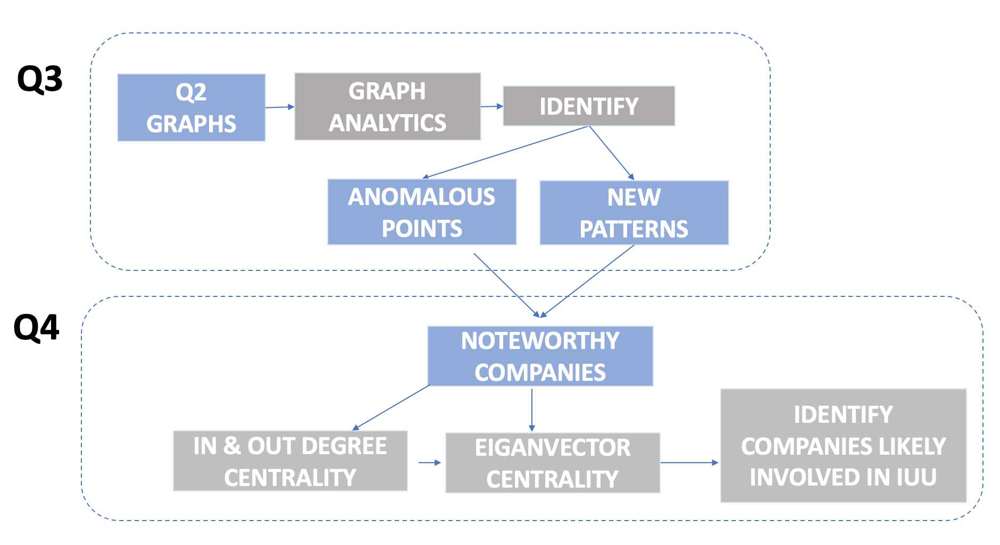

1. Background
In this project, our team will attempt the VAST Challenge 2023 and build a web-enabled visual analytics application by using R Shiny. The challenge focuses on illegal, unreported and unregulated (IUU) fishing, which is said to be a major contributor to overfishing globally. The illegal fishing trade has been linked to organized crime, and human rights violations are common when fishing operations are conducted without regulatory oversight. FishEye International is a nonpartisan organization has spent the past years collecting data and has made public several of their datasets to enlist the help of the Visual Analytics community to help analyse the data and make recommendations.
2. Project Topic
Our group has chosen to take on Mini-Challenge 2: Identify Patterns. In this challenge, The country of Oceanus has sought FishEye International’s help in identifying companies possibly engaged in illegal, unreported, and unregulated (IUU) fishing. Using visual analytics, our team strives to help identify companies that may be engaged in illegal fishing.
3. Motivation
The motivation of our group on the mini-case challenge 2 is as such:
Our group will be providing insights on the relationships between fishing participants in varying times. Organizations will have a better understanding of business relationship patterns.
From the sets of predicted knowledge graph links FishEye has provided, we will touch upon which ones are most reliable links.
Our attempt from #2 will not only reveal completedness of program tool provided, but also new patterns or anomalies that are only present when new links are added.
Lastly, we will be shedding lights on the potentially suspicious participants. Here, we attempt to make use of techniques for determining illegal activity within the network, so that governments and regulatory bodies can make better informed decisions.
4. Approach
The following are the approaches by our team to address the different questions.
4.1 Evaluating link inference bundled data sets
Our approach is identifying which bundle is reliable is as follows:
Plot a heatmap of the number of transactions over the years to observe the temporal trend and anomalies. The resulting year would be used as the timeframe in the subsequent network graph.

Next, plot a treemap based on attributes of the edges, specifically the HSCodes and the Year of the individual trade records. The resulting top HSCode and as well as the anomaly (in this case, the spike in the median weight) will be identified and similarly used for the network graph

Another treemap is plotted using the Bundled data based on HSCode Chapter30.

- Subsequently, a stacked bar chart is plotted to observe which HSCodes are completed to identify which bundles are reliable.

The plotted graphs will then be used to identify new patterns or anomalies that are present when new links are added.
4.2 Identifying which companies are likely to involve in IUU
